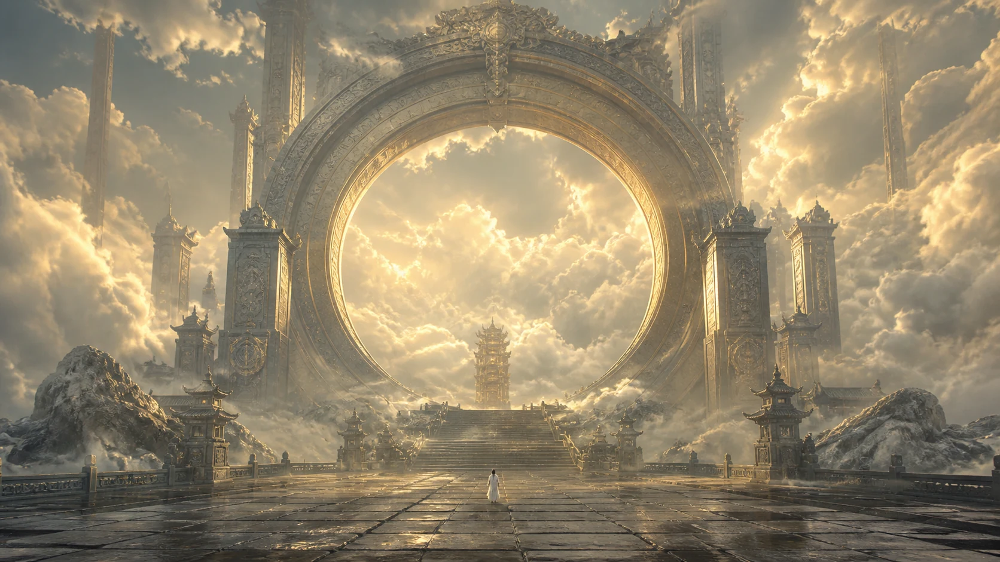
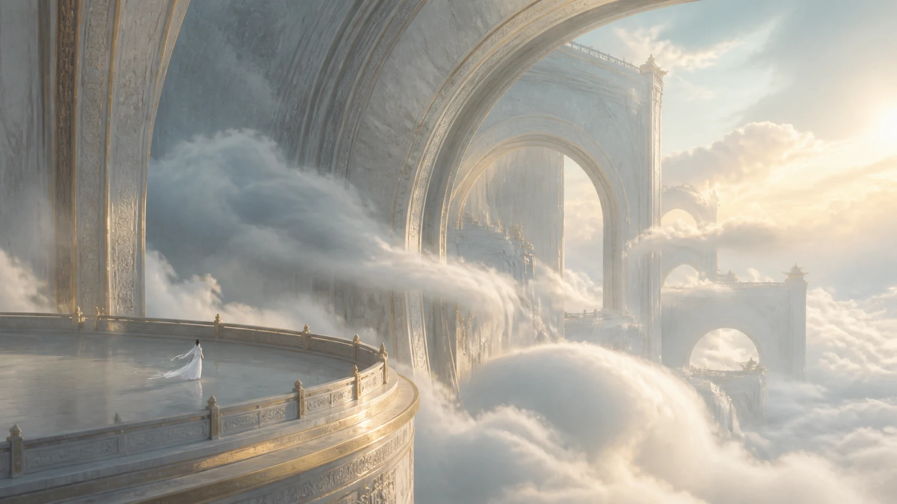
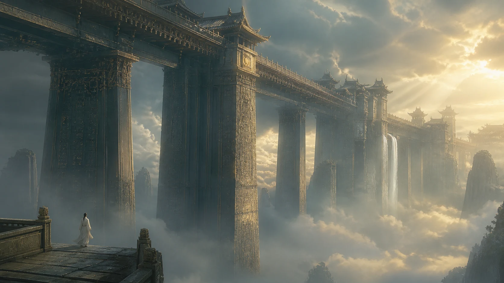
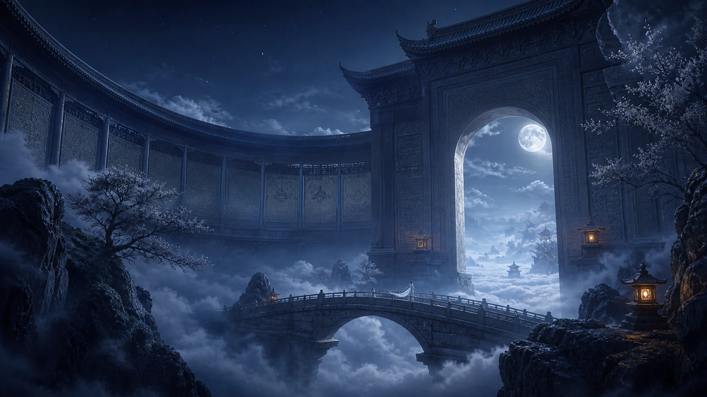
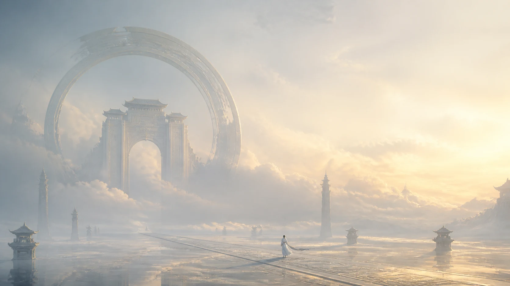

有些歌一響起，世界便換了一種尺度。
原本熟悉的房間、街道和自己的身體，忽然變得很小；天空變得很深，雲層有了重量，遠方的建築像從神話最慢的那一頁裡浮出來。人站在其中，不再是故事的中心，只是一個仍然會呼吸、會被風推動的微小存在。
這首歌沿著這樣的尺度展開。情緒沒有被急著說完，遠方也沒有被指向某個確定的答案。旋律像一陣從很遠處來的風，先掠過衣袖，再穿過雲與石頭，最後停在心裡某個一直沒有關上的地方。
「野馬也，塵埃也，生物之以息相吹也。」
這句古語見於《逍遙遊》。遠山之間，霧氣舒展如奔騰的野馬；一束光落進靜止的空氣，塵埃便一粒一粒浮現。野馬是春日山野蒸騰的游氣，塵埃是光裡細小的飛動，而「息」讓它們彼此相遇，也讓寂靜的天地慢慢流動起來。
宏大的山河與細微的塵粒，隔著看似遙遠的距離，仍共享著同一片氣息。雲霧升起、衣袖飄動、水面泛開的微光，都像同一口呼吸留下的不同形狀。


這句話與音樂的畫面，在雲海深處輕輕相遇。人物退到遠景，建築向天空升起，留出大片可以讓風通過的空白。
在那些雲海、長橋、圓門與巨大宮牆之間，白衣人物常常小得像一粒塵埃。那個人沒有必須完成的任務，也沒有急著對觀眾表明自己是誰。他只是走著、站著、等待著，讓飄帶替他回答風的方向。
人物縮小到幾乎只剩一點白，巨大建築才顯出真正的重量。圓門像一輪沉默的天體，長橋橫過雲層，宮牆從霧裡升起，人的存在仍清晰可見，卻與山河、風和水保持著柔和的比例。
當音樂把聽者帶到一座比山還大的門前，雲層沿著石壁緩慢流過，日常裡緊貼心口的事物便有了呼吸的距離。遠處的霧、腳下的水、衣角的風，都為情緒留下一點空白。
那些細小的重量仍在，只是與雲一起流動，與塵埃一起被光照亮，在較長的呼吸之後，慢慢離開世界的中心。
音樂的珍貴，有時只在於替心緒留出半步。半步之外，事情有了邊界，風也不再只吹向同一個方向。山河、雲層、遠方的宮牆，與一個人的疲倦、想念、害怕和遲疑，安靜地同時存在。
傍晚窗邊的灰塵，總在斜光落下時一顆一顆顯形。房間仍是原來的房間，漂浮的微粒卻忽然有了光。這首歌也像那道斜光，讓平常藏在空氣裡的情緒浮現，輕輕停留，再隨著旋律散開。

古語裡的逍遙，像一種廣闊的觀看。人可以很小，仍然走得很遠；塵埃可以很細，仍然在陽光裡發亮；一口氣看似輕微，卻足以讓雲霧、草木與遠山一起改變方向。
不必獨自撐起整個天地，肩膀便有了放鬆的餘地，耳邊也容得下更多聲音。這首歌的安靜力量，正藏在那座巨大得近乎不真實的建築之前：風仍在，雲仍在，遠方仍有未完成的路，所有事物都保留著自己的呼吸。

這段聆聽像一個人站在巨大圓門的下方。門內沒有宮殿，也沒有答案，只有一片更亮的雲。人站在水面上，衣角被風輕輕帶起，圓門的弧線向上延伸，直到沒入天光。
遠方的建築很大，大到像時間本身；腳下的水很安靜，安靜到能照出一個人正在慢慢改變的輪廓。此刻沒有誰勝過誰，也沒有凡間與天界的界線。只有一個微小生命，和一個仍然持續呼吸的世界。
歌播到最後，旋律並沒有替這趟旅程畫上很重的句點。它只是慢慢淡出去，像風從門內走到門外，像雲層重新覆蓋水面，像塵埃落在一張沒有人急著擦拭的桌子上。
旋律離開之後，門、雲與水仍停在原來的位置，只有聽見它們的方式變了。寂靜不再是空白，而是把遠方、腳步與夜色一一收進來的容器。
窗外的車聲、冷氣的低鳴、樹葉的摩擦，與旋律一起留在這個晚上。日常沒有被隔絕，反而在音樂之中顯出更細的紋理；每一個微小聲音，都像萬物以息相吹時留下的回音。
野馬也，塵埃也。山河的霧氣也好，光裡的一粒灰也好，都在同一個世界裡被吹動。人也一樣。
身影很小，仍在天地之間。
一口氣緩慢流過，帶著雲、塵埃與遠方的歌，回到世界的氣息。
